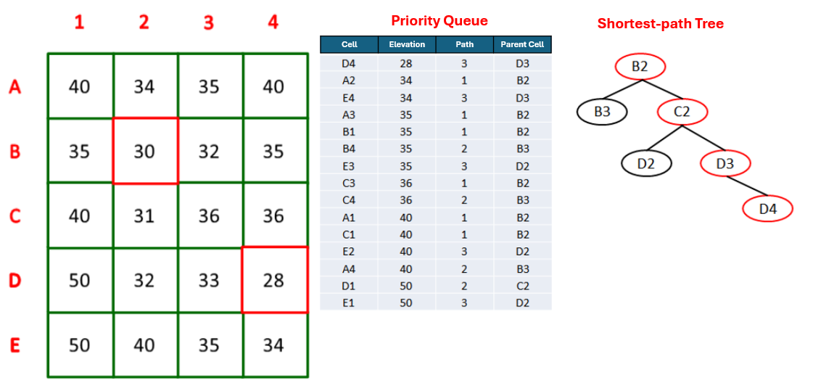

4 Example:
4.0.1 pfs
pfs removes depressions from a Digital Elevation Model (DEM) using a priority-first search algorithm. The tool initiates a grid search from each pit cell to locate the nearest spill point with a lower elevation. It employs a priority queue to evaluate potential paths, constructing a descending elevation trajectory to the outlet.
This process modifies cell values along the selected path to create a hydrologically continuous surface. The algorithm ensures all depressions are resolved, producing a pit-free DEM suitable for subsequent flow-direction analysis.
pfs removes all remaining depressions from a DEM by carving a path from each pit cell to an outlet cell using a Priority-First Search (PFS). Unlike simplepits, which changes only the pit cell, pfs modifies the elevations of multiple cells along a selected path so that flow can proceed continuously from the original pit to a lower cell. To minimize DEM alteration, the path is chosen to be as short as possible toward the lowest reachable elevation; if no valid interior cell is found first, the path may end at an invalid cell or at the DEM border.
The DEM is treated as a graph in which each grid cell is a node and neighborhood relations (typically 8-connected) are edges. Starting at the pit (initial node), PFS explores neighboring cells using a priority queue ordered by desirability—first by lower elevation, and, in case of ties, by shorter path length from the pit. As cells are visited, the algorithm maintains a tree of paths (parent–child relations) that encodes all partial routes under consideration. When PFS reaches a final cell that satisfies the stop criteria (lower elevation and shortest distance), it commits the path from the pit to that outlet and proceeds to modify the DEM along that path.
 Figure - PFS search to remove a pit. The priority queue tracks, for each visited cell, its elevation, the number of steps from the pit (path length), and its parent. The final path (e.g., B2–C2–D3–D4) is committed and marked in the path tree (Jardim, 2017).
Elevation modification is applied by creating a linear downslope along the chosen path: moving outward from the pit, each intermediate cell along the route receives an elevation slightly lower than its predecessor, using a small decrement step (in practice, 1e-3) applied cell by cell; the first (pit) and last (outlet) cells are not adjusted. This yields a gentle carved profile that preserves local relief while ensuring drainage continuity. To prevent creating a new pit near the outlet, PFS includes a stop condition that guarantees the computed elevation at the cell before the outlet will still be higher than the outlet’s elevation given the cumulative decrements; otherwise, the route is rejected and search continues. Border or invalid cells may also serve as terminating outlets under the stop criteria.
 Figure - DEM modification by a linear slope . Example before (a) and after (b) applying a constant decrement along the committed path (illustrated here with a larger step of
Figure - DEM modification by a linear slope . Example before (a) and after (b) applying a constant decrement along the committed path (illustrated here with a larger step of 1e-1 for clarity), leaving the pit and outlet cells unaltered (Jardim, 2017).
In practice, pfs complements simplepits: simple depressions are removed first with single-cell fills; complex ones are then resolved by PFS carving. The result is a pitless DEM suitable for reliable flow-direction, contributing-area, and drainage-network derivations, with minimal distortion relative to the original topography.
| Flag | Description |
|---|---|
dem |
Input raster DEM file (e.g.,inputDEM.tif) |
output |
Output raster file (e.g., outputDEM.tif) |
The following example demonstrates how to use simplepits tool from the command line:
Reference:
Jones, R. (2002). Algorithms for using a DEM for mapping catchment areas of stream sediment samples. Computers & geosciences, v. 28, n. 9, p. 1051–1060. https://doi.org/10.1016/S0098-3004(02)00022-5
Jardim, A. C. (2017). Direções de fluxo em modelos digitais de elevação: um método com foco na qualidade da estimativa e processamento de grande volume de dados [Doctoral dissertation, Instituto Nacional de Pesquisas Espaciais (INPE)]. https://sid.inpe.br/mtc-m21b/2017/05.17.13.26
See also: simplepits, removepits.
4.0.2 pfsd
pfsd removes depressions from a Digital Elevation Model (DEM) using a priority-first search algorithm that incorporates a reference drainage network. The tool prioritizes the processing of pits located on the drainage network before addressing upstream depressions. It constructs hydrologic outlets by carving descending elevation paths to the nearest lower cell.
This method ensures the resulting drainage structure aligns with the provided network. The algorithm differs from pfs by utilizing the drainage network to guide the depression-removal sequence, enhancing hydrological consistency with known channel locations.
4.0.3 removepits
removepits processes a Digital Elevation Model (DEM) to eliminate hydrological depressions and flat areas. This tool executes a sequence of operations, specifically the carvev, simplepits, and pfs algorithms, to ensure comprehensive hydrological correction. It produces a fully connected drainage surface where water can flow uninterrupted to the watershed outlet.
The procedure first addresses flat regions by carving drainage paths, then removes simple pits through elevation filling, and finally resolves complex depressions via priority-first search. The output is a pit-free DEM suitable for deriving accurate flow direction and accumulation networks.